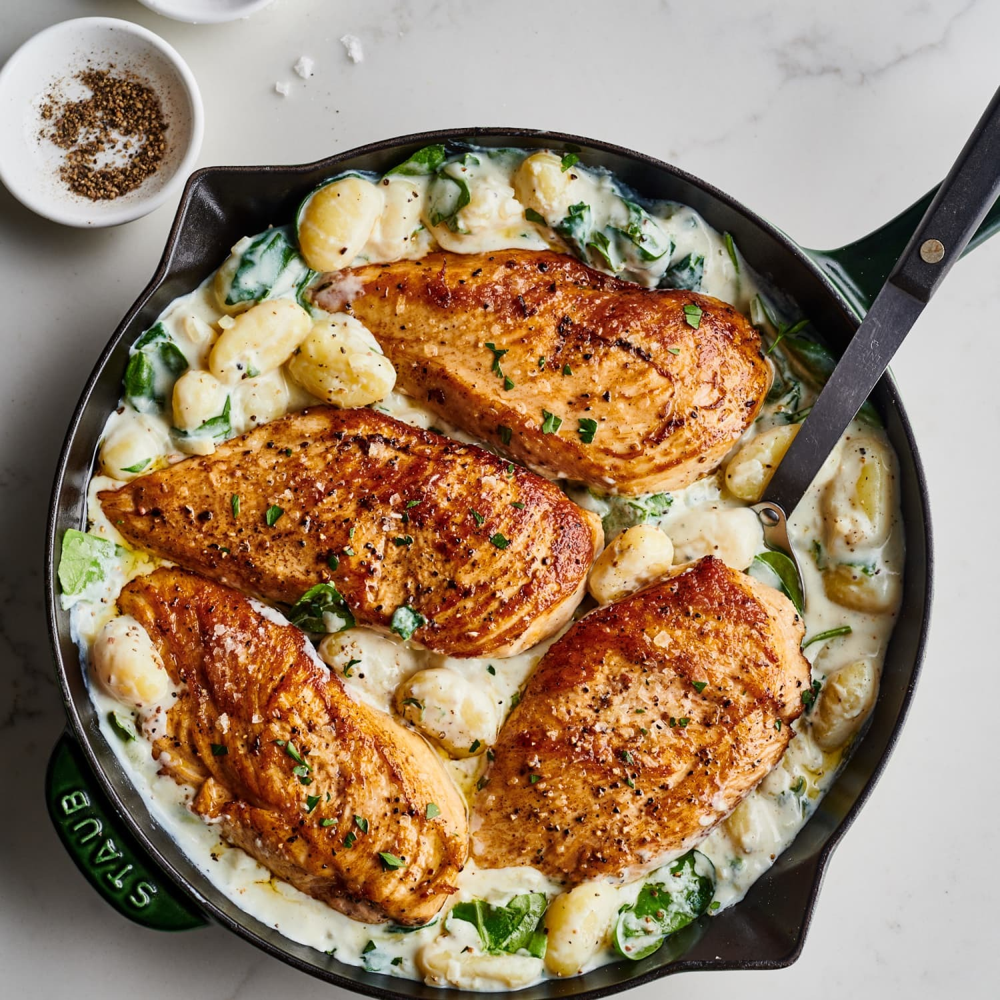

Gnocchi
Creamy Chicken & Gnocchi

prep time:
20 MINUTES
cook time:
40 MINUTES
total time:
1 HOUR
INGREDIENTS:
- 1 (16-ounce) package cauliflower potato gnocchi
- 1 1/2 pounds boneless, skinless chicken thighs
- Kosher salt and freshly ground black pepper, to taste
- 5 tablespoons unsalted butter, divided
- 1 medium shallot, diced
- 3 cloves garlic, minced
- 2 teaspoons chopped fresh thyme leaves
- 3 tablespoons all-purpose flour
- 1 1/4 cup chicken broth
- 1/4 cup dry white wine
- 1/2 cup half and half
- 1 bunch kale, stems removed and leaves torn into bite-sized pieces
- 1/2 cup freshly grated Parmesan, about 2 ounces
STEPS:
- Preheat oven to 400 degrees F.
- In a large pot of boiling salted water, cook gnocchi according to package instructions; drain well.
- Season chicken with 3/4 teaspoon salt and 1/2 teaspoon pepper.
- Melt 2 tablespoons butter in a large skillet over medium heat.
- Working in batches, add chicken to the skillet in a single layer and cook until golden brown and
cooked through, reaching an internal temperature of 165 degrees F, about 4-5 minutes per side; set aside.
- Melt remaining 3 tablespoons butter. Add shallot, and cook, stirring frequently, until tender,
about 3-5 minutes. Stir in garlic and thyme until fragrant, about 1 minute.
- Whisk in flour until lightly browned, about 1 minute.
- Gradually whisk in chicken broth and wine, and cook, whisking constantly, until slightly thickened,
about 3-5 minutes. Stir in half and half until thickened, about 1-2 minutes; season with salt and pepper, to taste.
- Stir in gnocchi and kale until the kale has wilted, about 1-2 minutes. Return chicken to the skillet; sprinkle with Parmesan.
- Place into oven and bake until bubbly, about 10-12 minutes.
- Serve immediately.